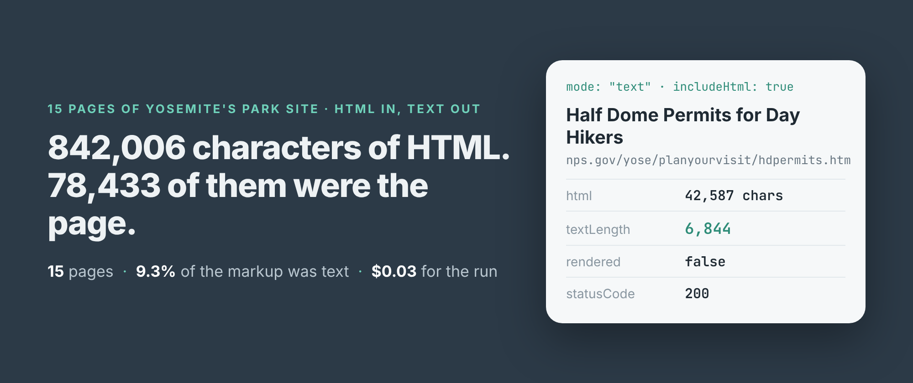
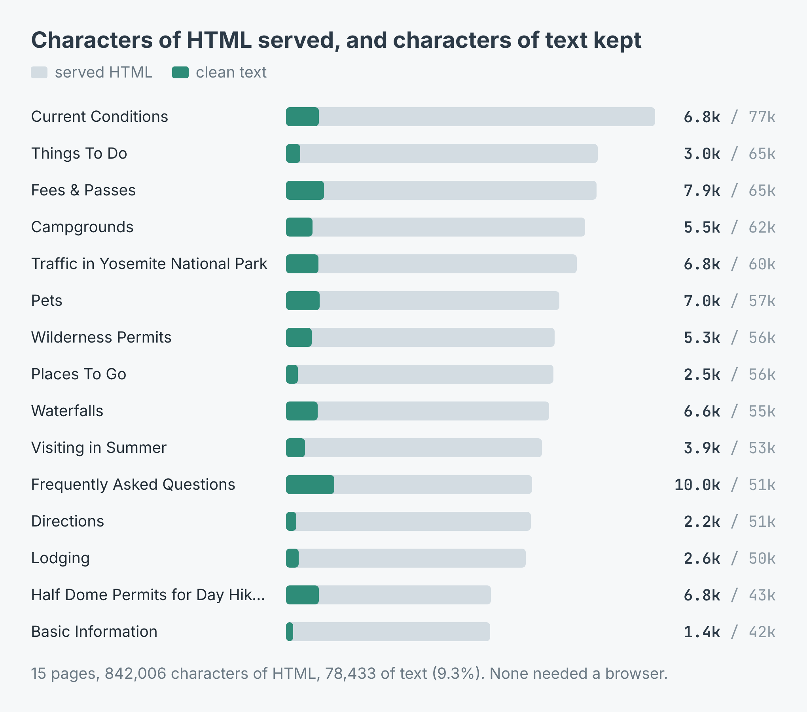
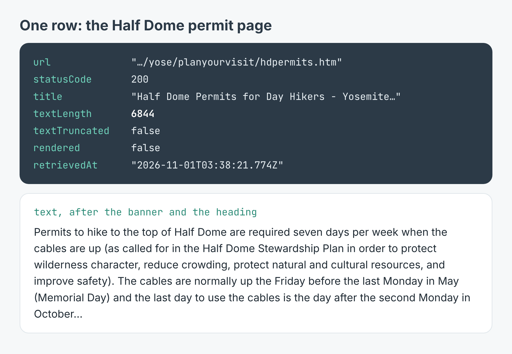
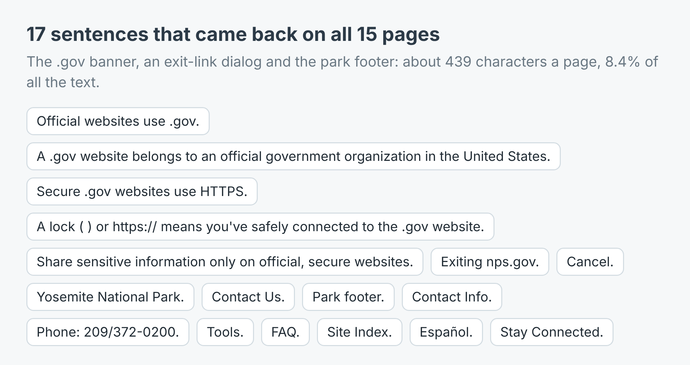

How to turn a website into clean text for an LLM (15 pages of Yosemite's park site)
I wrote this with an AI assistant. The runs, numbers and code are real, and I checked them.

The Half Dome permit page on Yosemite's park site is 42,587 characters of HTML. The part a person actually reads, the rules, the lottery dates, the 300 hikers a day, is 6,844 characters. The other 35,743 are markup: menus, scripts, image markup and a footer.
If you paste a page like that into a language model, or load it into a retrieval index, you pay for all 42,587 and the model has to find the 6,844 itself. Across the 15 visitor pages I read from nps.gov/yose this morning, the HTML came to 842,006 characters and the text to 78,433. That's 9.3%. Nine characters in every ten were not the page.
This post is how I got the text out, what it cost, and what still came along that I didn't want.
Two runs: find the pages, then read them
I build and run a web page text scraper on Apify. It has two modes. discover reads one page and returns its text plus every link to the same site, each with the words that were clickable. text reads the pages you name and returns their text alone. It doesn't crawl. It reads what you give it and nothing else.
So the first run was the park's home page in discover mode. It came back in one row with 2,342 characters of text and 50 links. 27 of them went into Yosemite's own pages, with anchors like "Fees", "Camping", "Half Dome Permits" and "Current Conditions". 11 went elsewhere on nps.gov: the privacy policy, FOIA, the agency's FAQ. The other 12 were photos, and their anchor was the image's alt text: "A waterfall flowing down a granite cliff."
The anchor text is what makes the second step easy. I didn't have to guess that the fees page lives at /planyourvisit/fees.htm. I picked 15 visitor pages by their anchors and read them in text mode:
import { ApifyClient } from 'apify-client';
const client = new ApifyClient({ token: process.env.APIFY_TOKEN });
const actor = client.actor('simple.actor/page-text-reader');
const run = await actor.call({
urls: ['https://www.nps.gov/yose/planyourvisit/fees.htm'],
mode: 'text',
});
const ds = client.dataset(run.defaultDatasetId);
for (const page of (await ds.listItems()).items) {
if (!('text' in page)) continue; // never read, not empty
console.log(page.title, page.textLength);
}
All 15 came back with status 200 in 11.9 seconds. None needed a browser: every row said rendered: false, which means the text was already in the HTML the server sent. The scraper only opens a browser when the served HTML turns out not to hold the page.

Served HTML against the text kept, page by page. Most pages were 50,000 to 65,000 characters of markup.The share of text moved a lot from page to page. The FAQ was the wordiest, 10,041 characters of text out of 51,163, almost 20%. Basic Information was the thinnest, 1,448 out of 42,427, 3.4%: most of that page is links to other pages. The median page held 5,529 characters of text, which is a comfortable size for one chunk of a retrieval index or one paste into a chat.
What a row looks like
Each page is one row: the address asked for, loadedUrl (where it ended up after any redirect), statusCode, title, text, textLength, textTruncated, rendered and retrievedAt. I also switched on includeHtml for this run, which adds the raw markup as html. That's where the 842,006 came from. You don't need it to get the text.

The Half Dome row, and its text after the site banner and the page heading.The text is the page in full, not a summary. "A maximum of 300 hikers are allowed (about 225 day hikers and 75 backpackers) each day" is in there word for word, and so is the preseason lottery's window, "March 1 through March 31". A full stop goes at the end of every heading and paragraph, so a heading doesn't run into the sentence under it.
One field matters more than it looks. A page that couldn't be read comes back with an error and no text key at all. A page that loaded and genuinely had nothing on it has text: "". That's why the code skips rows without text rather than rows with empty text: if you're filling an index, you don't want a failed fetch to look like a page with nothing to say.
What it cost
The listing charges $0.002 for each page read and $0.00005 a run as a start fee. The 15-page run was $0.03005, and the discover run before it $0.00205, so the whole site read came to $0.0321. A page that can't be read is never charged; a 404 is, because "this page isn't there" is an answer. A thousand pages cost $2.00 plus the start fee.
The sentences that came along
The scraper takes out navigation, headers, footers and cookie banners, and drops a line it has already seen on the same page. It doesn't compare one page with another. So whatever the site repeats on every page in a way that doesn't look like navigation stays in, once per page.
On nps.gov that was 17 sentences. The ".gov" banner at the very top ("Official websites use .gov. A .gov website belongs to an official government organization in the United States."), the text of an "Exiting nps.gov" notice with its "Cancel" button, and the park's footer: "Contact Info.", "Stay Connected.", "Site Index.", "Español.", the park's phone number. Every one of the 15 pages started with that banner.

About 439 characters a page, 8.4% of all the text the run returned.It's 8.4% of the text, and in a retrieval index it's worse than its size. Fifteen chunks that all open with the same five sentences about .gov websites look alike to a similarity search. The fix is a few lines of code: count how many pages each sentence appears on, and drop the ones that appear on all of them. The example repo does exactly that, and on the fees page it took 7,875 characters down to 7,436.
Two smaller things. Where a link sat at the end of a sentence, a space was left before the full stop: "the second Monday in October ." And one heading on the permit page did run into its paragraph, "Permits for Backpackers (including Camping in Little Yosemite Valley) Backpackers—including those who…", so the full stops aren't perfect either. Neither hurts a language model much, but don't expect typeset prose.
The link list needs a filter too. Twelve of the home page's 50 links were .jpg files, and eleven left Yosemite for nps.gov's agency pages. Filter by anchor text and by path before you feed the list back in, or you'll pay $0.002 to read a photograph.
Make it your own site
The example repo, website-to-text-for-llm, takes a start page and a pattern for the anchor text, reads the matching pages and writes them to one site.txt with the repeated sentences gone, in Node and in Python. Point it at your own product's help centre with "pricing|billing|refund", your council's site with "bins|parking|permits", or a supplier's documentation with whatever you'd search it for. The scraper is at apify.com/simple.actor/page-text-reader.